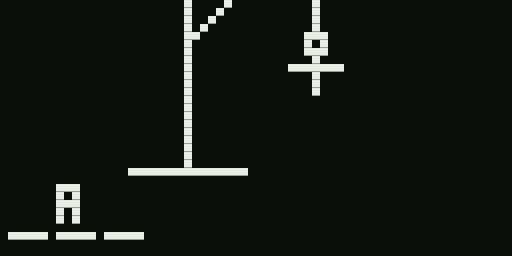
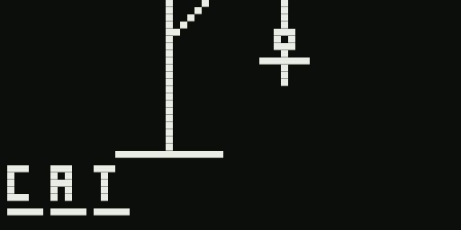

Hangman (Smith)
Graeme Smith · DREAMER no. 9 (1981-05) p. 19 1K RAM


A two-player hangman: the first player types a word of up to ten letters, then the second guesses letters. Every miss adds a part to the gallows, and if the man is hanged a long buzz sounds. Letters are entered as two keypad digits in the 'T.V. Typewriter' code.
Keys
Letters as two hex keys (A-F = 0A-0F, G = 10 ... Z = 23); E erases, F ends the word.
Files
| File | Version | Load | Run |
|---|---|---|---|
| Hangman (Smith).d68 | main | 0080-03C3 | C000 |
Listing as transcribed (with notes): hangman_smith.txt
Source
DREAMER no. 9 on archive.org, p. 19 (PDF page 21). Author: Graeme Smith.
Corrections applied
None.
Open doubts
None.